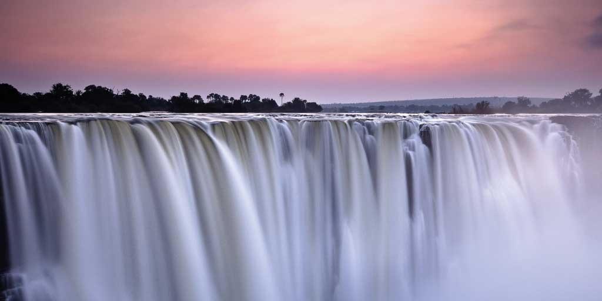

Japan
The Kumano Kodō (熊野古道) is a series of ancient pilgrimage routes that crisscross the Kii Hantō, the largest
peninsula of Japan.

China
The Great Wall of China (Chinese: 萬里長城) is the collective name of a series of fortification systems generally built across the historical northern borders of China.
Zimbabwe
Mutarazi Falls, at 772 meters is the highest waterfall in Zimbabwe, second highest
in Africa and 17th highest in the World.
Malaysia
Mount Kinabalu is the highest mountain on the island of Borneo in the east Malaysian state of Sabah.